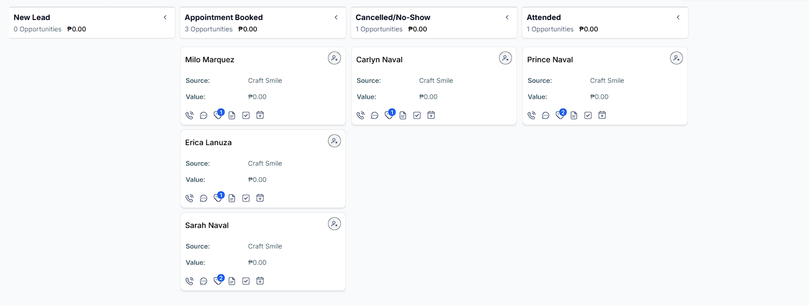

01 · Project Context
What This Project Is About
A complete patient journey from landing page visit to
post-appointment follow-up, built as one connected funnel
and CRM automation system.
SmileCraft Dental Clinic is a practice portfolio project
created to demonstrate how a clinic can use GoHighLevel
to capture appointments, send reminders, track patient
outcomes, and automatically trigger the correct follow-up.
Project Type
Practice / Portfolio Project
Industry
Dental / Healthcare
Scope
Funnel + CRM + Automation
Main Goal
Book and follow up with patients
Project Status
Completed · Portfolio Ready
Patient Journey Flow
02 · Front-End Funnel
Funnel Pages Built for Booking
Three connected pages guide visitors from learning about
the clinic to selecting an appointment and receiving
confirmation of the next steps.

Landing Page
Introduces the clinic, explains the available dental
services, builds trust, and directs visitors toward
the booking page.

Booking Page
Allows patients to choose a preferred appointment
date and time through the GoHighLevel calendar.

Thank-You Page
Confirms that the appointment request was received
and explains what the patient should expect next.
03 · Automation Workflows
GoHighLevel Workflows Behind the System
The backend workflows manage appointment communication,
CRM movement, patient status, rescheduling, and long-term
follow-up after a patient books.
1
Booking trigger:
The workflow begins when a patient books an appointment.
2
CRM update:
The patient is tagged and moved to the Appointment
Booked pipeline stage.
3
Confirmation email:
The patient receives an email containing their
appointment details.
4
Timed reminders:
Reminder emails are sent one day and four hours
before the scheduled visit.
5
Internal status check:
After the appointment, the clinic receives a message
requesting the final appointment outcome.
1
Clinic staff receives an internal status-check message
containing three Trigger Link options.
2
Staff selects whether the patient
Attended, Cancelled, or did not show.
3
The selected Trigger Link starts the appropriate
workflow and updates the patient journey automatically.
1
Attended path:
The patient is moved to the Attended stage and receives
a thank-you and feedback email.
2
Cancelled path:
The contact is tagged, moved to the Cancelled stage,
and sent a rescheduling email.
3
No-show path:
The patient is moved to the No-Show stage and receives
a recovery and rebooking email.
4
Patients who do not immediately rebook receive the
needs-reschedule tag and enter the
nurture workflow.
1
Send the first nurture email with helpful dental-care
information and a booking link.
2
Wait seven days and send a gentle follow-up email.
3
Wait another 30 days and send a final reminder to
reconnect with the patient.
04 · CRM Operations
Appointment Status Becomes Easier to Track
The GoHighLevel opportunity pipeline keeps patient status
visible so the clinic can quickly identify who booked,
attended, cancelled, missed an appointment, or needs
follow-up.

CRM Opportunity Board
Patients are organized into stages such as New Lead,
Appointment Booked, Cancelled, No-Show, Follow-Up
Needed, Attended, and Completed.
Workflow highlight:
After an appointment, the clinic receives a quick status
check. One staff action can trigger the correct attended,
cancellation, no-show, follow-up, or rescheduling path.
This reduces manual CRM updates and keeps the next action
clear for every patient.
05 · Designed Business Value
Why This Automation System Matters
The value is not only in capturing the appointment. The
system also keeps the patient journey moving after the
booking is submitted.
01
Easier appointment booking
02
More consistent patient communication
03
Fewer missed follow-up tasks
04
Faster rescheduling and recovery
05
More organized clinic operations
01
Front-End Funnel
Captures patient interest and guides visitors toward
scheduling an appointment.
02
Backend Automation
Handles confirmations, reminders, status checks,
CRM movement, and patient routing.
03
Clear Clinic Process
Gives the team a structured process for every
appointment outcome and follow-up path.
Key takeaway:
The funnel captures the booking. The CRM automation keeps
the patient journey moving.
Portfolio disclosure:
SmileCraft Dental Clinic is a practice portfolio project
created to demonstrate GoHighLevel funnel, CRM, email,
SMS, and workflow automation skills. It is not presented
as a live client implementation.